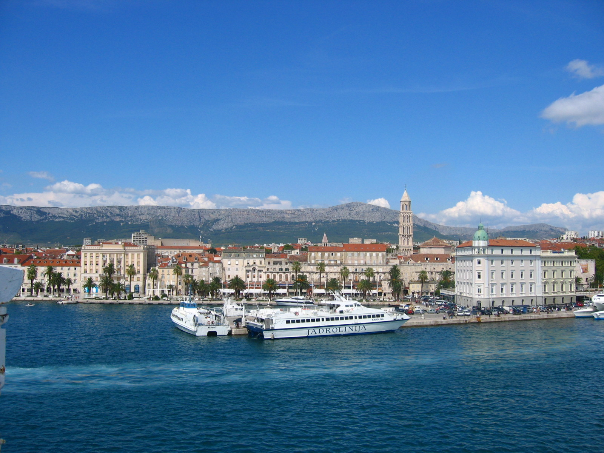
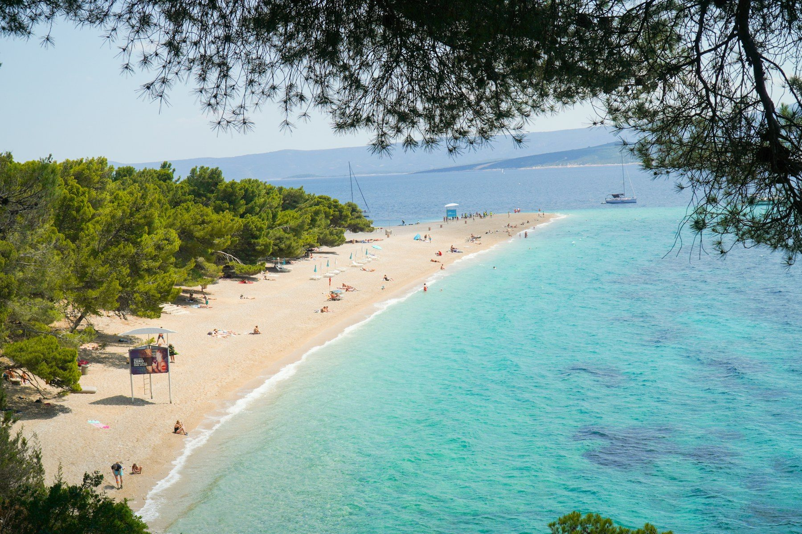
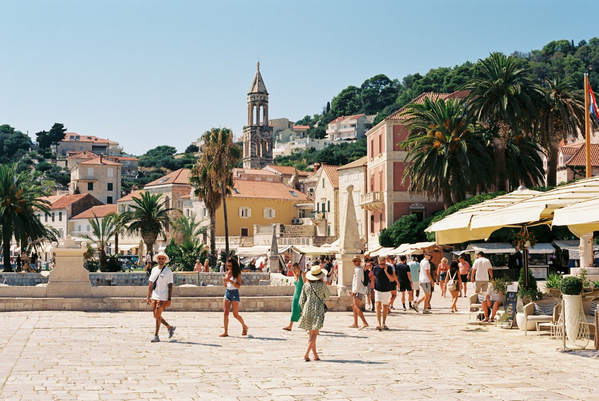
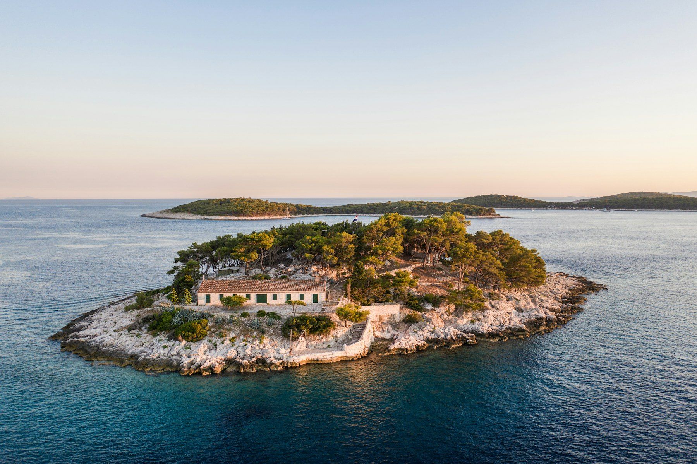

Split
No. 01 · Croatia · Days 1–2 · live inside a Roman palace
The old town is Diocletian's 4th-century palace — streets are its corridors, restaurants are its cellars. Everything worth seeing is a ten-minute walk apart.
The list
| No. | Thing | Notes |
|---|---|---|
| 1 | Diocletian's Palace | Wander the Peristyle, cellars, and Bronze Gate — the walls double as the town. Free to roam. |
| 2 | Cathedral & bell tower | Climb the bell tower attached to the palace for rooftop views over the red roofs. |
| 3 | Climb Marjan hill | Easy trail to the viewpoint for the classic sunset photo over the harbour. |
| 4 | Swim at Bačvice | The town beach within walking distance — good for the D2 afternoon, and home of picigin. |
| 5 | Erstwhile: Krka waterfalls day tour | Half-day option if the group wants a big nature moment instead of town time. |
| 6 | Salona + Trogir by local bus | Roman ruins and a UNESCO old town on a tiny island — the low-cost alternative. |
| 7 | Island day: Hvar or Brač catamaran | The deck's big island option: catamaran from the Riva out to Hvar Town (harbour, fortress climb, swim off the Pakleni islands) or to Brač for Zlatni Rat, the shingle horn at Bol. Seasonal — book ahead. |
| 8 | Blue Cave & five islands speedboat | The deck's 10½-hour epic: the Blue Cave on Biševo, Komiža (the Mamma Mia 2 town), Stiniva cove, the Budikovac Blue Lagoon, a Pakleni islands pass and free time in Hvar Town. Entry fee extra; weather-dependent — the cave only opens in calm seas, so hold it loose. |



Eat & drink: drinks on the Riva at golden hour; fresh seafood in the small lanes around the palace. Currency is the euro; cards and ATMs everywhere.Field note · Balkans 2027